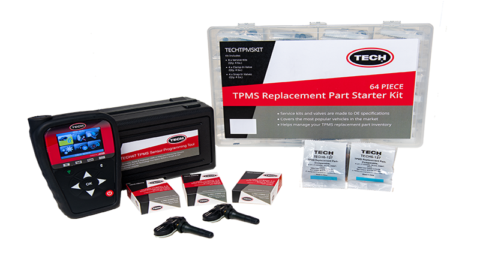
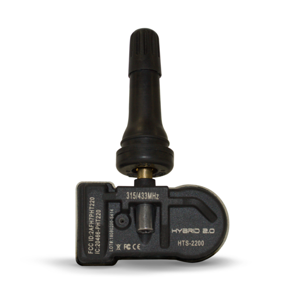
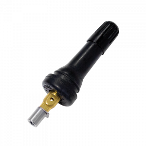

HERRAMIENTAS DE PROGRAMACIÓN Y SERVICIO

TECH ofrece herramientas universales de programación, diagnóstico y servicio de TPMS de alta calidad. Las herramientas de diagnóstico de TECH incluyen módulos OBDI que son completamente actualizables con activación universal de TPMS y capacidades de escaneo, así como también ofrecen datos de procedimientos de reaprendizaje indirectos, manuales y automáticos.
GRAN VARIEDAD DE SENSORES

Se estima que 14 millones de sensores fallarán este año debido a las baterías gastadas y a las condiciones del camino que dañan los sensores. Los sensores son unidades electrónicas montadas directamente dentro del conjunto de la rueda del neumático. Los sensores TPMS contienen un elemento sensor de presión de aire y, según la aplicación, también pueden monitorear la temperatura del aire de los neumáticos y proporcionar otras funciones de monitoreo avanzadas transmitidas de forma inalámbrica al receptor del vehículo. Los sensores de reemplazo TECH OE-R OE son reemplazos directos para sensores originales. Los sensores TECH Hybrid 2.0 son los sensores configurables más rápidos del mercado actual. Los sensores TECH TPMS están disponibles para todos los modelos de vehículos y años recientes. Además, el sitio web de TECH incluye una práctica sección de búsqueda del fabricante, modelo y año del vehículo TPMS que identifica rápidamente el sensor TPMS correcto para ese vehículo en particular.
KITS DE SERVICIO

La gama completa de kits de servicio TPMS de TECH proporciona los componentes esenciales que deben reemplazarse cada vez que un vehículo equipado con TPMS requiere que se retire una llanta para el servicio, lo que garantiza que se cumplan los estándares de calidad y que los clientes puedan conducir con sus sistemas TPMS completamente Operacional.
VÁLVULAS DE SERVICIO

Como componentes clave de la línea completa de productos TPMS de TECH, los vástagos de las válvulas están contenidos en los kits de servicio de TPMS para sensores Snap-in y sensores Clamp-in.